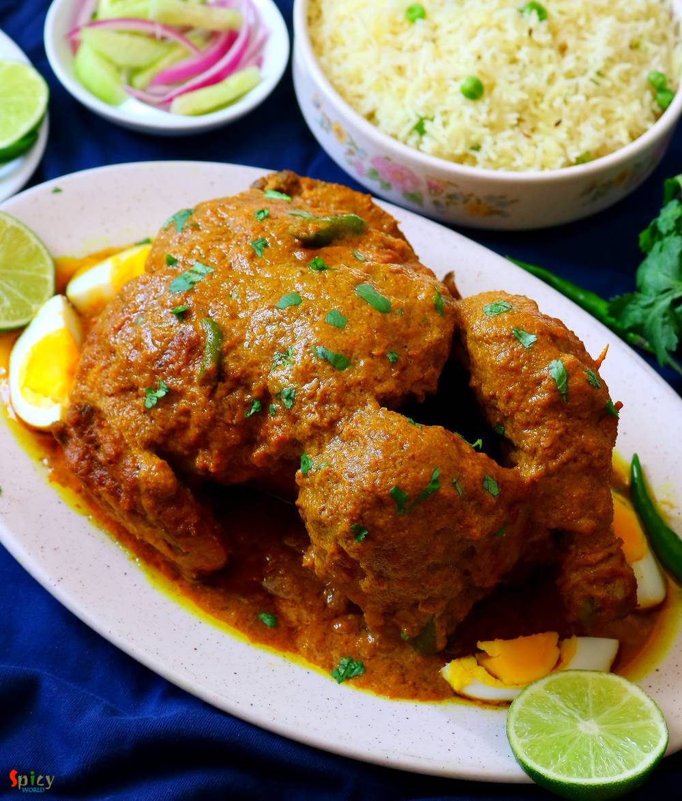

Simple and Easy Recipes
Previous Post
Murgh Musallam
© 2016 Spicy World, Published on: Jan 2, 2020
Murgh Musallam is a delicacy from Mughlai cuisine. The recipe requires for whole chicken but you can definitely make it with medium size pieces also. In Murgh Musallam recipe, the whole chicken will be marinated for a good long time, then it will get stuffed with eggs and after that the chicken will get cooked in a flavorful onion and nut based gravy. You can make this dish on special occasions and Murgh Musallam goes best with pulao or naan. Do give this recipe a try and let me know how it turned out for you.

Ingredients
- 500 grams of chicken.
- 2 medium onion, roughly chopped.
- 10 nuts (cashews/almonds/peanut)
- 2 Tablespoons of poppy seeds.
- 3 Tablespoons of ginger garlic paste.
- Spice powder 1 Tablespoon of each (turmeric powder, red chili powder, roasted cumin, coriander powder, kashmiri chili powder)
- 3 - 4 Tablespoons of yogurt.
- Salt and sugar as per your taste.
- 2 hard boiled eggs.
- Whole spices (2 bay leaves, 2 green cardamom, 2 cloves, 1 small cinnamon stick).
- 1/4th cup of oil.
- 3 Tablespoons of ghee.
- 1 Tablespoon of garam masala powder.
- 3-4 drops of kewra water.
- Half cup of hot water, if needed.
- 10 small skewers.


Steps
Make deep cuts with a knife on the whole chicken.
Make deep cuts with a knife on the whole chicken.
Make a smooth paste out of onion, nuts and poppy seeds along with some water. Before making the paste soak the poppy seeds and nuts in some water for 30 minutes.
In a big mixing bowl, add that paste, ginger garlic paste, yogurt, all of the spice powder, salt, sugar. Mix well.
Now add the marinade all over the chicken. Rub well. Put some of the marinade in the cavity also.
Cover it and keep in the refrigerator for overnight.
Before cooking put the eggs inside cavity of the chicken.
Seal the legs with 4 skewers by arranging them in crisscross way. Also put 2 skewers between legs and breast. This way eggs will be secured.
Heat oil and ghee in a wok or kadai.
Add the whole spices and saute for few seconds.
Now carefully place the chicken. Fry for 5 minutes.
Then add the remaining marinade, stir a little bit, cover the pan and cook on medium flame for 25 minutes.
Keep rotating the chicken in every 5 minutes.
Chicken will loose lot of juices if not then add some hot water.
After that flip the chicken to the other side and again cook it for 30 minutes on low flame.
When the gravy will become thick and the chicken will become soft, add garam masala powder and kewra water. Mix well and turn off the heat.
Let it rest for 30 minutes then serve. While serving, remove the eggs from cavity, cut them and arrange them around the chicken.
Your murgh musallam is ready to serve.
Serve this hot with naan or pulao ..
")
Previous Post